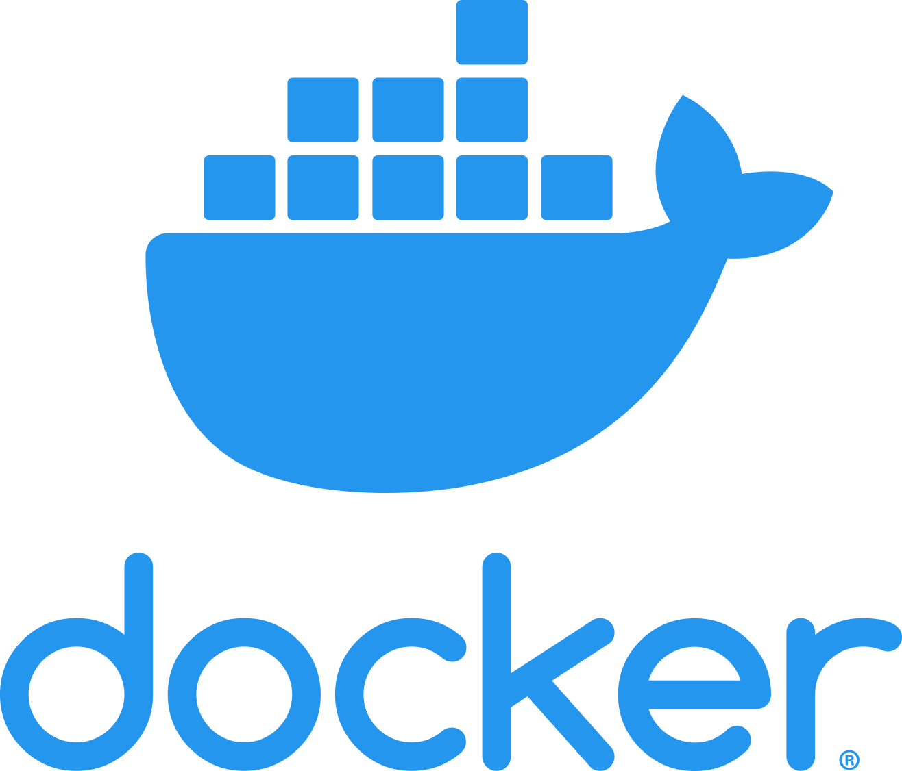
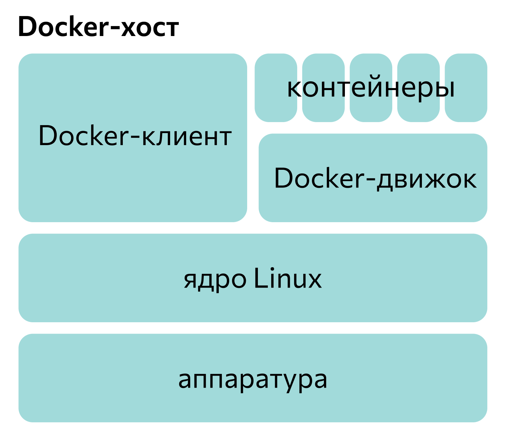
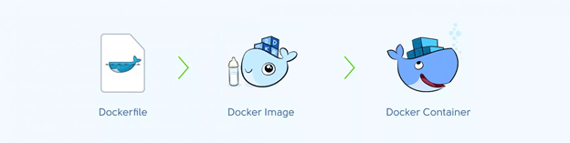

Docker — это программная платформа для разработки, доставки и запуска контейнерных приложений. Он позволяет создавать контейнеры, автоматизировать их запуск и развертывание, управляет жизненным циклом. С помощью Docker можно запускать множество контейнеров на одной хост-машине.
Платформа Docker представлена в двух вариантах: бесплатная Community Edition под лицензией Apache и платная Enterprise Edition. Платная версия предназначена для коммерческого использования и распространяется по проприетарной лицензии. Изначально системой можно было пользоваться в Linux и UNIX-системах, но начиная с 2015 года в ПО добавили поддержку Windows.
Что такое контейнеры:
Контейнеризация — это способ упаковки приложения и всех его зависимостей в один образ, который запускается в изолированной среде, не влияющей на основную операционную систему. С помощью контейнера можно отделить приложение от инфраструктуры: не важно, в каком окружении оно будет работать, есть ли там нужные зависимости и настройки, — разработчикам достаточно создать программу и упаковать все зависимости и настройки в единый образ. Затем ее можно разворачивать и запускать на других системах. Это ускоряет процесс разработки, сокращает промежуток между написанием кода и его выкладкой.
Контейнеризация напоминает виртуализацию, но технологии отличаются друг от друга. Виртуализация работает как отдельный компьютер со своей операционной системой и виртуальным оборудованием. Внутри одной операционной системы можно запустить другую. При контейнеризации виртуальная среда может запускаться прямо из ядра основной ОС и не виртуализирует оборудование. Поэтому контейнер может работать только в той же операционной системе, что и основная. Так как контейнеры не виртуализируют оборудование, они потребляют меньше ресурсов.
Как устроен Docker:
На изображении представлена примерная структура платформы. Docker — клиент-серверное приложение. Это означает, что оно состоит из двух частей: сервера и клиента.
Сервер еще называют Docker-движком или демоном (daemon). Это фоновый процесс, который непосредственно управляет контейнерами. Именно демон создает, разворачивает и запускает контейнеры. Его можно сравнить с двигателем машины.
Клиент — это программа-интерфейс для командной строки, с которой взаимодействует пользователь. Он отдает команды через терминал. Клиент сообщает нужные сведения демону и отдает ему указания. Если продолжать аналогию с машиной, клиент — это руль и педали.
Клиент и сервер могут находиться на одном устройстве, а могут — на разных. Во втором случае клиент подключают к удаленному серверу через сокеты или API.
Компоненты для контейнеризации:
Docker работает со следующими компонентами.
Dockerfile.
Это файл для предварительной работы, набор инструкций, который нужен для записи образа. В нем описывается, что должно находиться в образе, какие команды, зависимости и процессы он будет содержать.
Для сборки образа из Dockerfile используют команду:
docker build <докерфайл>
Docker Image.
Это образ — неизменяемый файл, из которого разворачивается контейнер. Для этого нужно запустить образ в клиенте с помощью специальной команды:
docker run <образ>
Docker Registry.
Это реестр, или репозиторий — открытая или закрытая база образов. К ней можно подключиться через клиент Docker и загрузить нужный с помощью команды:
docker pull <образ>
При запуске команды docker run программа сначала проверяет, есть ли нужный образ в локальном хранилище. Если его нет, она сама находит файл в репозитории и скачивает на компьютер.
Docker Container.
Это уже готовый и развернутый контейнер, который находится на каком-либо устройстве.
Так пользователь запускает нужный образ через клиент Docker и ждет, пока платформа развернет его в полноценную среду или приложение-контейнер.
Docker контейнер:
Docker контейнер — это стандартизированный, изолированный и портативный пакет программного обеспечения, который включает в себя все необходимое для запуска приложения, включая код, среду выполнения, системные инструменты, библиотеки и настройки. Контейнеры позволяют упаковать приложение и все его зависимости в единый объект, который может быть запущен на любой системе, поддерживающей Docker, без изменения среды выполнения.
Преимущества использования Docker контейнеров:
Изоляция:
Контейнеры изолируют приложения друг от друга и от хост-системы, что уменьшает возможные конфликты между зависимостями и обеспечивает более надежную среду выполнения.
Портативность:
Контейнеры могут быть созданы и запущены на различных системах без изменений, что делает развертывание приложений более простым и надежным.
Эффективность использования ресурсов:
Контейнеры используют общие ресурсы операционной системы и разделяют ядро, что делает их более эффективными по сравнению с виртуальными машинами.
Масштабируемость:
Контейнеры легко масштабируются горизонтально, позволяя быстро добавлять экземпляры приложения в ответ на увеличение нагрузки.
Управление версиями:
Контейнеры позволяют управлять версиями приложений и их зависимостей, что упрощает процесс развертывания и обновления.
Как начать работу с Docker:
Docker доступен для Linux, Windows, Mac. Чтобы скачать установочный файл, нужно перейти по ссылке и выбрать подходящую версию. Подробную инструкцию по установке можно найти в официальной документации.
Расскажем про работу с «первым контейнером». Это практически аналог “Hello, World” для Docker: скачивание и разворачивание популярного образа из репозитория. Обычно используется какой-либо дистрибутив Linux:
docker run ubuntu echo “Hi, I'm Ubuntu”
Запись означает «Разверни образ Ubuntu в контейнер и выполни в нем команду echo “Hi, I’m Ubuntu”». Эта команда написана на bash — языке сценариев Linux.
1. Docker-клиент получит эту запись и отправит инструкции демону.
2. Тот проверит, есть ли образ Ubuntu на компьютере. Если его не найдется, программа скачает его из Docker Hub и сохранит.
3. Затем движок развернет образ в контейнер — внутри изолированно от основной системы запустится Ubuntu.
4. И уже внутри Ubuntu выполнится команда echo “Hi, I’m Ubuntu”. Она выведет в консоль надпись “Hi, I’m Ubuntu”.
Это наиболее простой пример — возможностей у Docker намного больше.
Недостатки Docker:
Высокая потребность в ресурсах
Docker добавляет дополнительный слой абстракции и требует дополнительных вычислительных ресурсов. Это означает, что нужно балансировать между удобством и оптимальным использованием ресурсов.
Оркестрация для крупных приложений
Docker хорош для управления небольшим числом контейнеров. Однако при наличии 50–100 сервисов может потребоваться оркестратор, так как Docker не обладает достаточными инструментами для эффективного управления ресурсами и обеспечения надежности в случае разных сценариев обновления контейнеров.
Большие приложения с микросервисной архитектурой часто используют оркестраторы, такие как Kubernetes или OpenShift, чтобы обеспечить более высокий уровень управления и надежности. Docker в таких случаях часто оказывается недостаточным.
Сложности на Windows и macOS
Docker, изначально разработанный для Linux, может столкнуться с проблемами совместимости на других ОС. Кроме того, установка Docker на Windows иногда может конфликтовать с VirtualBox, что может вызвать трудности при настройке.